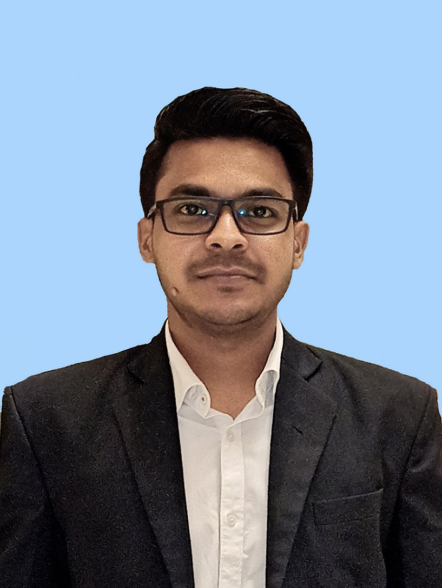

01 / DOMAIN
↻
Engine Control & FADEC
Control logic, ECU functionality, engine-state management and software lifecycle activities for avionics engine-control platforms.
CONTROL · ECU · FADEC
Available for the next engineering challenge
7+ years building dependable embedded and safety-critical software — with a current focus on FADEC, engine control systems, verification and validation.

APProfile
I specialize in embedded software for environments where correctness, traceability and disciplined verification matter.
My current work is centered on engine control systems and FADEC software. I work across requirements analysis, software architecture and modelling, Embedded C implementation, integration, verification, structural coverage and production acceptance.
Earlier roles built a strong foundation in firmware, electronics, sensors, PCB design and connected embedded systems — giving me a practical understanding of both hardware interfaces and software behaviour.
Core expertise
Control logic, ECU functionality, engine-state management and software lifecycle activities for avionics engine-control platforms.
Embedded C development across requirements, architecture, implementation, integration and disciplined software processes.
Requirements-based testing, VectorCAST, regression, structural coverage and MC/DC-oriented verification evidence.
Hands-on embedded experience with STM32, ESP32, Raspberry Pi and communication interfaces across connected systems.
System architecture
Measure engine state
Execute control logic
Apply command
Produce response
Selected projects
Safety-critical engine-control software activities spanning requirements, control logic, Embedded C, integration and verification.
Software verification using VectorCAST, regression testing and structural coverage including statement, branch and MC/DC analysis.
Embedded IoT platform work combining firmware, hardware, sensors, communication and field deployment.
Sensor and gateway solutions with microcontrollers, APIs, FOTA and cloud-connected telemetry.
Career timeline
Working in engine control software for safety-critical avionics platforms, with focus across requirements, modelling, implementation and verification.
Software verification for TCTS–VOBC with emphasis on VectorCAST, regression and structural coverage.
Universal Master Mote · Embedded firmware · Hardware · Field deployment
Master Mote · Door Sensor · Embedded C · FOTA
Embedded C · PCB design · Sensors · APIs · FOTA
Technical stack
$ system.profile() role = "Senior Avionics Engineer" domain = "Engine Control / FADEC" language = "Embedded C" process = "Requirements → Code → Evidence" quality = "Verification / Traceability" $ system.status ● READY next challenge
07 / Contact
Open to senior opportunities across avionics, engine control, embedded software and safety-critical systems.